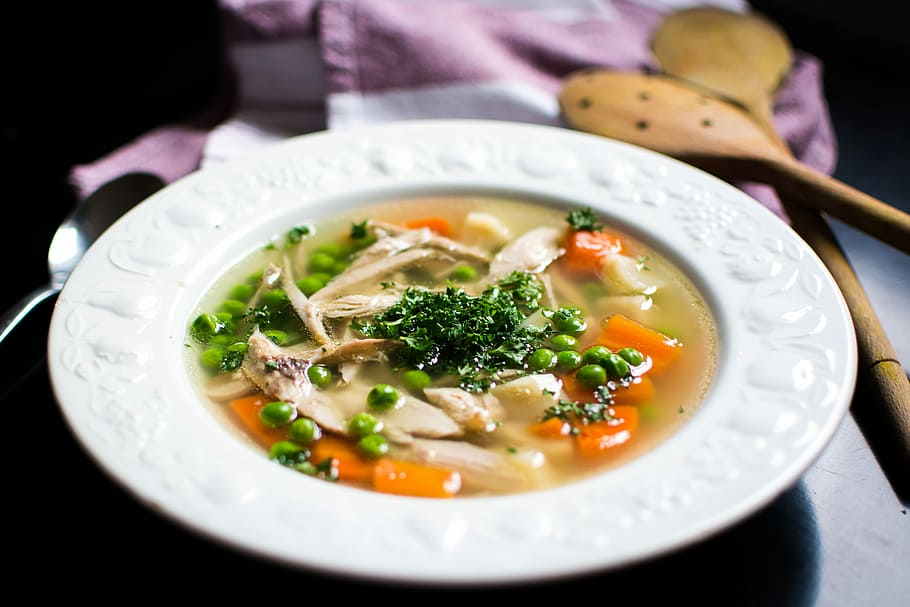

Broth

About Broth:
Broth is a savory liquid made by simmering meat, fish,
or vegetables in water for a short period of time.
It is a versatile ingredient that can be used
in a variety of dishes, including soups, stews, sauces, and gravies.
Broth is also a good source of nutrients, including protein, minerals, and vitamins.
Ingredients
- 2-3 pounds chicken bones or rotisserie chicken carcass
- 2 celery stalks, chopped
- 2 carrots, chopped
- 1 onion, chopped
- 2 cloves garlic, minced
- 2 bay leaves
- Salt and pepper to taste
Steps:
- Rinse the chicken bones or carcass under cold water and place them in a large pot.
- Add the celery, carrots, onion, garlic, bay leaves, salt, and pepper.
- Cover the pot with water and bring to a boil over high heat.
- Reduce heat to low and simmer for 4-6 hours, skimming off any foam that rises to the top.
- Remove the pot from heat and let it cool slightly.
- Strain the broth through a fine-mesh sieve or cheesecloth into a clean pot.
- Refrigerate the broth overnight or for up to 3 days.
- Skim off any fat that has solidified on top of the broth before using.
Home Page